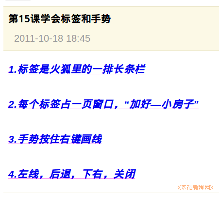

2011-2012 第一学期七年级电脑操作基础教学课程设计
作者：TeliuTe 来源：基础教程网
十五、学会标签和手势 返回目录 下一课
学习目标：学会使用标签来浏览多个页面；
注意事项：点加号可以新建一个标签；
1、标签和手势
1）打开火狐浏览器，点加号创建一个标签；
2）点小房子主页按钮，打开校园网；
3）建三个标签，一个日志、一个指法、一个投票；
4）手势是按住右键划线；

板书设计：第15课 学会标签和手势
1.标签是火狐里的一排长条栏。
2.每个标签占一页窗口，点“加号---小房子”。
3.手势按住右键划线。
4.左线；后退，下右；关闭。
课后记 2011-10-18 17:43：
原以为很简单，谁知好多绕不过弯
看来接受新的东西都有些困难
--
标签有些抽象，找不出合适的例子
先说方块不懂，改成长条
--
学生习惯直接在原来的上面接着做
开新窗口比标签还快，火狐的菜单应该改一下
把新标签放在第一个上
--
反复强调用新标签，先建好标签然后再开始做
只是有的学生做着就忘记了要换一个
--
这样的好处就是老师可以腾出手来
巡视各个学生做的情况，不再局限于记成绩去了光
--
在黑板上画一个大的网页图示，把三个标签画出来
页面内容多学生眼花缭乱，给个图让照着做
--
一边讲一边问，怎么加标签，第一个做什么
讲的内容后面要用到，学生听的要好些
--
进来之前要求学习别着急，讲的时候认真记
让组长帮着检查一下，相互指导也可以
本节学习了标签和手势的基础知识，如果你成功地完成了练习，请继续学习下一课内容；
返回目录 下一课
本教程由86团学校TeliuTe制作|著作权所有
基础教程网：http://teliute.org/
美丽的校园……
转载和引用本站内容，请保留版权信息和本站链接。